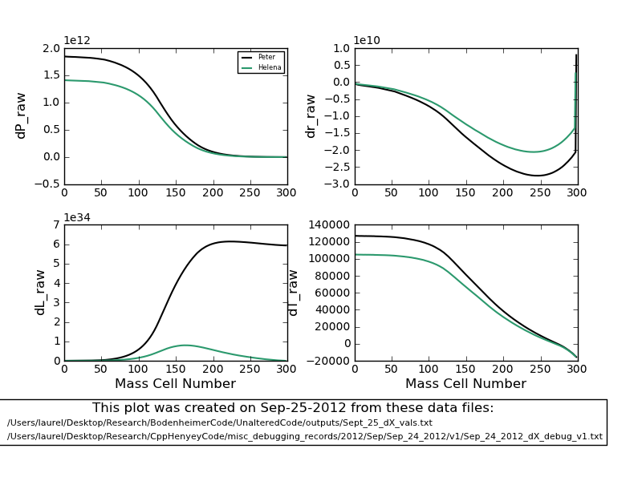
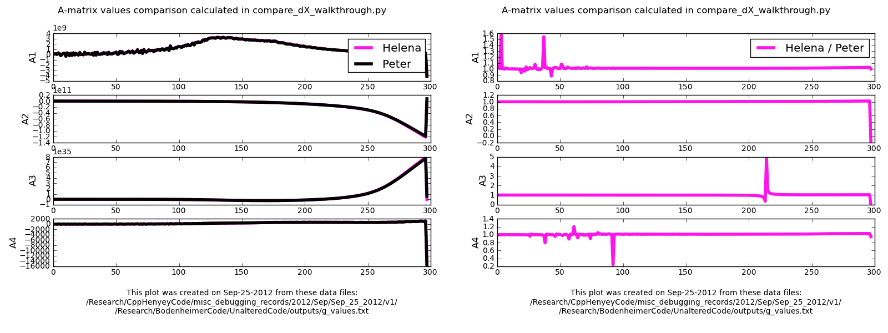
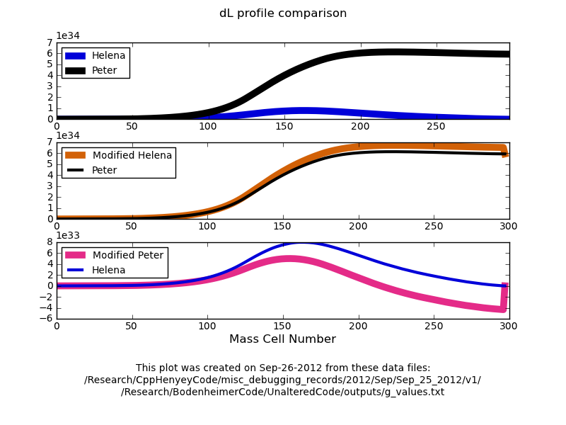
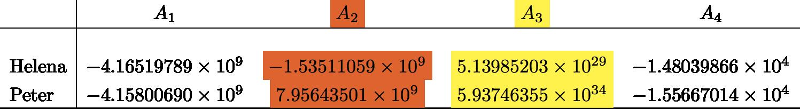
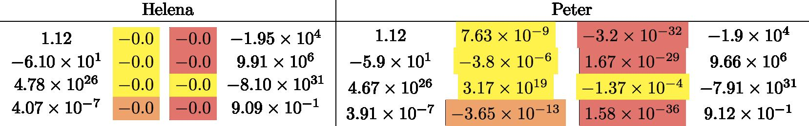
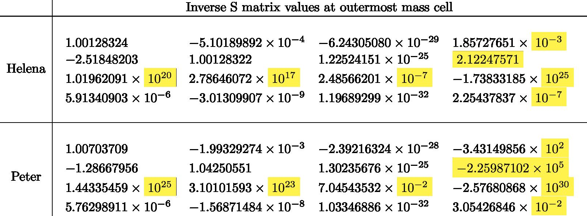
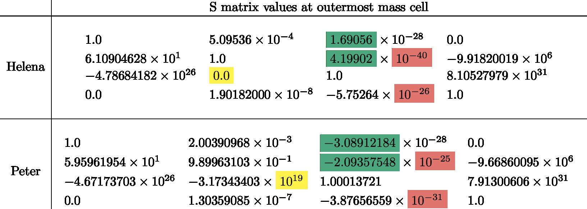

My
handwritten notes from the day.
Date & Time: Sept. 27, 2012
Location: campus
Computing context: MachoMac
(/Desktop/Research/CppHenyeyCode/src, /Desktop/Research/BodenheimerCode/UnalteredCode)
From last time:
Okay, I think I may have figured out what's going on here. Next time, I need to update my GnJ.cpp subroutines to use the outer boundary conditions given in eqns. (5.47) through (5.50) in the Peter cookbook.
In addition, the Ratm values that Helena and Peter's code are generating are *close* but not *exactly* equal to each other.
To Do Today:

Figure
1
I
think I've figured out why the Helena and Peter dX profiles have
been mismatched. The file I was using for the Peter dX values
(/Users/laurel/Desktop/Research/BodenheimerCode/UnalteredCode/outputs/n32_1Msun_corrections_v4.txt)
was, I think, generated before I disabled the switch in Peter's code
that automatically sets the outermost CDE values to 1 or 0, rather
than calculating the full derivatives. This leads to very different
D matrix values at the outermost mass cell, which causes the dX
profiles to behave very differently (by several orders of
magnitude!) Figure 1, above, shows how much better the Helena and
Peter dX profiles now match, although 1) it's still not perfect,
esp. in the dL profile, and 2) I still need to go through and check
this with the new CDE Peter values.
To Do, now:
Move the old
CDEG value text files (from Peter's code) into different names
Get Peter's
code to print out the CDEG values it's generating from this same
run
Parse that
data into separate text files
Add the
appropriate headers to each filexs
Run these new
CDEG values through compare_dX_walkthrough.py to see how Peter's
code is now behaving.

A comparison of the
A-matrix value profiles between Helena and the new and corrected
Peter-generated A-matrix values. Both are for a 1Msun, n=3/2
polytrope, no-fusion initial model, for a single fitting
iteration.
The plot on the left
shows the raw A-matrix profiles from the two codes.
The plot on the right
shows the ratio of the values from the two codes, to give a
clearer picture of how well the results do or don't agree.
Figure
2:
Figure
out why the luminosity profiles are still so different.
Start by comparing the A-matrix profiles (See Figure 2, above.)
Figure 3 suggests (see below) that changing the outermost Helena A-matrix values to the Peter values causes the dL profiles to come into near perfect agreement (middle plot of Figure 3).
Start here tomorrow, picking up with this outer-most A value investigation.

Top panel plots the raw
dL profiles generated by Peter and Helena.
Middle panel plots the
raw Peter dL profile, and the Helena dL profile generated when you
set the outermost A-matrix values to their Peter-generated
counterparts.
Bottom panel plots the
raw Helena dL profile, and the Peter dL profile you get when you set
the outermost A-matrix values to the Helena values.
Figure
3
To Do Today:
Look at what's causing the dL profiles to still differ so much from each other. Particularly, look at and compare their outermost A and B matrix values.
Comparison of the outermost A-matrix values:
 Outermost
A-matrix values (table 1)
Comparison
of the outermost (well, actually the penultimate) B-matrix values:
 Second
to last B-matrix values (table 2)
The color coding scheme is, roughly, yellow = really significantly different, orange = probably significantly different?, salmon = probably not a significant difference.
Comparison of the outermost Inverse S matrix values:
 Outermost
Inverse S matrix values (table 3)
Based
on where the discrepancies in these inverted matrices lie, I'd bet
that the difference in the original S matrices stems from different
values of the row4, col3 values b/w the codes.
Comparison of the outermost S matrix values:
 Outermost
S matrix values (table 4). The color coding scheme here is: yellow
= definitely a significant difference
salmon
= probably not that significant, since these values are so small as
to be effectively zero from the computer's point of view green
= sign difference b/w results from the two codes.
Two
questions, now:
Which of these differences b/w the outermost S matrices is the most (functionally) significant in effecting the outermost A-matrix values?
Is it the outermost D matrices that are driving the differences b/w the outermost S matrices? If not, what is?
My
handwritten notes from the day.
To keep in mind for later:
Were the Peter values I've been using in my debugging generated from the NO fusion version of the fortran code??? Definitely need to check this.
For the 1 Mjup model: do the Peter and Helena models' dX values (raw) now agree, too?